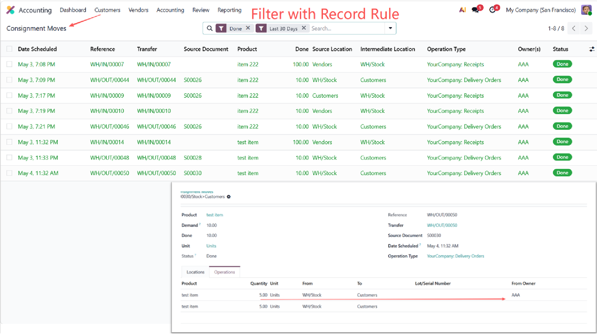
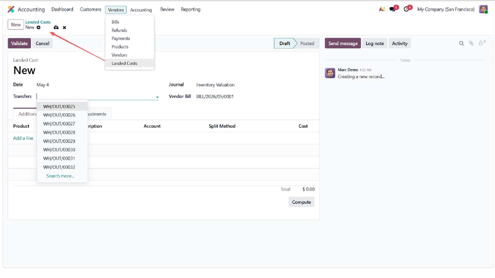
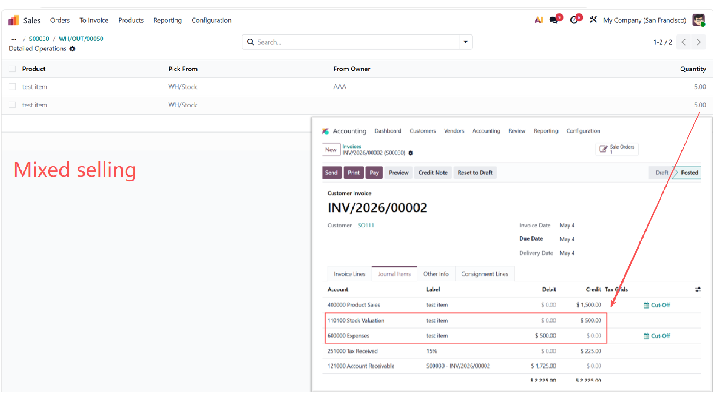
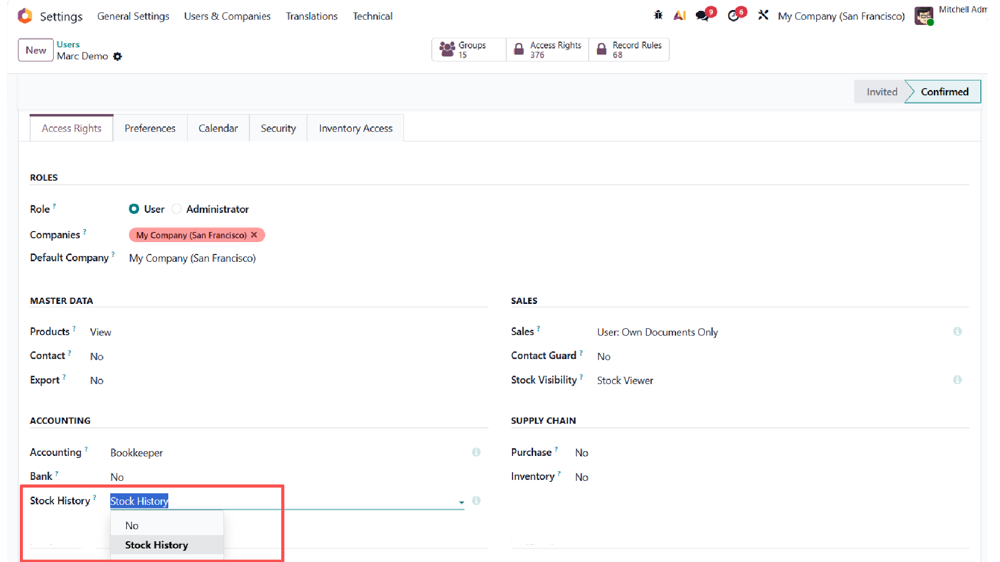

This is a companion module for
Inventory Access Control for Sales and Accounting
(suite_inventory_access). It cannot be used
standalone — suite_inventory_access must be
installed first.
When both suite_inventory_access and
stock_landed_costs are installed, this module
auto-installs and adds two things:
stock.landed.cost records for the
Accounting Stock History group.

stock_landed_costs is optional. When it is not
installed, accountants have no need for landed cost access and
no menu should appear. Packaging the bridge as an auto-install
companion keeps the main suite_inventory_access
module lightweight and free from a hard dependency on landed
costs.
| Group | Access on stock.landed.cost |
|---|---|
| Accounting Stock History | Read / Write / Create / Delete |


stock.landed.cost for the Accounting Stock History groupsuite_inventory_access.stock_landed_costs.suite_inventory_access —
the parent module. This bridge module has no function without it.stock_landed_costs —
Odoo's native landed cost module.
Released under the GNU Lesser General Public License v3
(LGPL-3.0-or-later). The full license text is included in the
LICENSE file shipped with the module.
Maintained by SuiteState. For questions, bug
reports, or feature requests, visit
suitestate.com or contact
hello@suitestate.com.